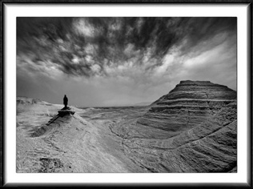

|
 ОТШЕЛЬНИК 2011
МАТЕРИКИ поэма сонетов Памяти В.В.Набокова
1917. РОССИЯ, РОЖДЕСТВЕНО ПОД ПЕТРОГРАДОМ
Когда
в фамильный дом вошли большевики,
Им
ведомы дерев глухие языки,
1921. АНГЛИЯ, КЕМБРИДЖ
Когда
в чужой стране её
язык знаком,
хоть
не дано сейчас предвидеть урожая,
Пока
что ты родной поэзией влеком,
И,
слава Богу, здесь отсутствует обком:
Два
языка в ходу, и Университет –
1934. ГЕРМАНИЯ, БЕРЛИН
Когда
в жилой район пришли штурмовики,
Опять
менять страну? Заботы нелегки,
Бездомность и нужда – отнюдь не пустяки:
Но
если книги жгут отсюда в двух кварталах,
А без
такой парчи – лишь серые дома,
1937. ФРАНЦИЯ, КАНН
Когда
на берегу томит полдневный жар,
Ты
пишешь по ночам. Всё
изощрённей
дар
Но
слишком уж легко натуру ставят к стенке
Да
люди ли они, в чьих головах угар?
А ты пиши, пиши, увязывай слова – в них жизнь, любовь и ум, и память в них жива.
1957. США, ИТАКА В ШТАТЕ НЬЮ-ЙОРК
Когда
нужда опять взяла тебя в тиски,
ты
снова выбрал путь, не хоженый доселе,
где
ханжества крюки и пошлости пески, –
Хулители твои, совсем стыда не зная,
Что
сделаешь – давно седы твои виски,
И мир
признал твою – и вашу – правоту,
1969. ШВЕЙЦАРИЯ, МОНТРЁ
Когда
пришла пора вернуться в Старый Свет,
Родные
берега закрыл глухой запрет,
Тогда
уж всё
равно, какая под ногами
Тогда
создать страну; её
на карте нет,
частица рая есть и есть частица ада
Жизнь
словно в зеркалах, где важен каждый блик:
2011. ИЗРАИЛЬ, РИШОН-ЛЕ-ЦИОН
Когда
заходишь в дом, где полки высоки,
Я
издавна пошёл
к тебе в ученики,
Хожденья нелегки, но это мне с руки:
и, о
земной молве мечтая иногда,
Январь - февраль 2011
САДОВНИК диптих
Карлу Штивельману 1.
…возле теплицы садовника Мамулашвили…
Александр Големба
В
теплице садовника Мамулашвили
Бутоны
такого высокого стиля
К нему
не идут за обычным букетом –
–
Батоно Давид, вы меня не забыли?
В
теплице садовника Мамулашвили
Случается за́
день не больше десятка,
Всё
прочее время – поливка, посадка,
А надо
ещё
поспевать за наукой,
и всё
это вовсе не кажется мукой
И если
события жизни вас били,
2.
Он
проходит по горным отрогам,
Он
храним от опасностей Богом,
Тот
цветок никогда не видали,
Но
садовника старое тело
Нет в
саду у него саповнелы –
огорчённо
ворчали: - О Боже,
Год
проходит, и пять, и десяток,
Но на
рынке вчера говорили,
Январь 2011
Из
будки с телефоном-автоматом,
Так и
должно быть: время непреклонно,
Мне
неизвестны номер телефона
Вся
жизнь прошла. Возможно, не по странам –
И
вдруг вопрос, не кажущийся странным: А жив ли я сейчас –
не
тот, который в будке телефонной
Его,
конечно, нет, и даже запах
Вот и
сегодня – непонятно даже:
Январь 2011
ДАЧНАЯ БАЛЛАДА
Снимали дачу где-то на высотах,
По тёмным
доскам белая извёстка,
Второй этаж. Поющие ступени. Две комнатки, и никаких замков. – А если кто залезет, тем не мене? – Увидит – неча красть, и был таков!
…Чай
на террасе под полёт
подёнок Мир был красив, не дорисован, тонок… Всё как вчера – и много лет назад.
Они прошли. Сменились поколенья. Небось, владельцы новые теперь. Кирпичный дом, построенный с уменьем. На входе металлическая дверь.
Высокая и прочная ограда, Прожектора устроены где надо. Поставлены где надо фонари.
Охранник зону наблюдает в телик,
Бетонная стена участки делит,
И
время чётко
то дорисовало,
Январь 2011
ФУТБОЛ диптих
1.
Вот на стене простая рамка;
в ней,
давним временем дыша, с инициалами Д.Ш.
Их музыкальный гений века
своей
рукою начертал, и резюме: «Спартак устал».
Он был своим на стадионе, великий горестный Д.Ш. Здесь всё открыто, и не стонет его свободная душа.
Играют ладно или дурно,
страсть безоглядно горяча, передвижение мяча.
А если приглядеться строго,
за
схваткой воль всегда видны и недоказанность вины,
и вся загадочность успеха,
когда,
стремителен и лих, что сотворит он через миг.
Стоит суровая погода
на
территории страны, игра – и маски не нужны!
2.
Двадцать два футболиста, и трое судейских, и мяч,
То не
просто игра, то всемирный футбольный экстаз,
Сила,
скорость, уменье терпеть нестерпимую боль,
В два
неполных часа уместились позор, торжество,
Январь 2011
ВЕЧНЫЙ СЮЖЕТ поэма
В.
1.
На экране – всемирно прославленный мим.
На
лице его белый, без пропусков, грим –
И
неведомо как создаётся
для нас
В этой сказке художник стоит у холста.
Пишет
он, и невесты его красота
Пишет
он, не считая часов и минут;
Вот
закончен портрет. Ещё
ноет спина,
–
Отдохни, – говорит он, соблазны суля, –
Вот
художник сидит и сидит сатана
Сатана
не скрывает своё
торжество:
Пьёт
художник вино за стаканом стакан,
Пьёт
художник вино и глядит на портрет:
Мим уходит с экрана, нелепый, смешной.
Перерыв. И реклама клубится волной, Мы глядим друг на друга – и что тут сказать?
Как всё
это сумел рассказать-показать
2.
Продолжается сказка, печально проста. Постаревший художник стоит у холста. В мастерской извели паутину.
Кисти,
краски, уменье как прежде при нём,
И
невеста, и слава ушли от него,
В том,
что было накоплено, светится дно,
Но ведь он же художник, всему вопреки!
Поднимается кисть, и дрожанье руки
Растираются краски. Простор на холсте
Не
считая часов, он стоит у холста,
Как
большой музыкант, что играет с листа,
И закончен портрет: что хотел, то и смог.
Сатана
не допущен к нему на порог –
Кисти,
краски опять за дверною чертой;
Мим уходит с экрана, печальный, смурной.
Перерыв. И реклама клубится волной, Снова мы друг на друга с вопросом глядим: как всё это сумел рассказать он один, не сказав ни единого слова?!
3.
Вот
художник, и с ним непременный портрет,
Милосердие смотрит с портрета,
В
галереях и клубах, в конторах газет,
– Не
встречали, увы, – произносят в ответ, –
В
некий день он почувствовал слабость и жар, И в назначенный час подошла медсестра. Он подумал: – Наверное, снится.
И
сейчас же к восторгу рванулась душа –
И
светилась в печальных глазах доброта,
Бел больничный покой и простынка бела…
– Я
так долго искал, – шепчет он из угла, – Бел халат медсестры и косынка бела.
Медсестра говорит: – Я так долго ждала! –
Мы сидим у экрана, который погас.
В
молодые года мы вернулись на час,
Каждый
что-то своё
в этой сказке узнал,
Мим
смывает белила, насуплен, угрюм,
Февраль-март 2011
СНИМАЕТСЯ ГРУЗИНСКОЕ КИНО диптих
Отару Иоселиани
1.
Снимается грузинское кино. Большой пикник на берегу Ингури.
Артисты и массовка пьют вино
Есть
множество обдуманных примет –
Есть
хоровое пение, костёр
– – Мне нужно, чтоб вы вовсе не играли!
Пусть
не смущают вас прожектора
И
умный зритель, что войдёт
сюда,
…Уходит в ночь дневное торжество,
Неужто
не осталось ничего
Дом
под скалою, кухня и очаг,
2.
Снимается кино. Площадка. Много света. На первом плане – бомж. Из горлышка глоток.
Снимается кино, в котором нет сюжета:
Герои пьют вино. На солнце спины греют. Стреляют иногда. Стреляются порой. Заходят в магазин. Влюбляются. Стареют. Позволено спросить: а кто же он, герой?
И
скажет режиссёр:
– Нелёгкая
задача;
который жизнь живёт,
не жалуясь, не плача, –
Февраль 2011
В далёкое
прошлое мысленный сделай бросок –
Вот кости в песке, где могучая конница шла. Вот смальта в песке, где дворцы возвышались и храмы. Барханы пустыни, где чья-то столица была. Остатки домов – но песчаные бури упрямы…
Сквозь
посвисты ветра как будто ритмический шаг
Но
это, увы, лишь фантомные звуки в ушах –
Февраль 2011
В.
Гремят
литавры, и поют валторны,
И люди
в зале, музыке покорны,
Симфония, достигшая финала,
Концерт окончен. По дороге к дому
Но
молвишь фразу – и в словах знакомых
Вот и
осталась памятная веха –
Март 2011
БАЛЛАДА ПОЛУСТАНКА
Я
вдруг проснулся в темноте вагонной
Умчался поезд музыкой истомной,
В
кармане документы, слава Богу,
Ведь
полустанок – это просто домик, Вот женщина идёт, несёт подойник. Ей можно и поведать, что со мною.
Она
посмотрит просто и открыто:
Авось, найдётся
что-нибудь на грядке,
Входите в дом. Есть комната пустая,
Там
утешает наша жизнь простая,
Работа в поле, молоко да каша;
И я остался, выбрав жизнь простую. Дорожный зов манит меня всё реже,
а
если и манит, я протестую –
А
здесь довольно воли и покоя,
Из
всех возможных выбран жребий лучший:
Март 2011
Как
дверь на петлях, и замок дверной,
Пишу
стихи – оберегаю речь
В
душе надежда тайная жива –
Март 2011
Так
может случиться и в самом разгаре серьёзного
дела:
спиральные пятна, а что – непонятно.
Всё
это продлится и вовсе недолго – не больше минуты;
Но останется жить ощущение смуты,
в тебе зарожденья –
Ты
мимо прошёл,
и туда возвратиться сумеешь едва ли,
Март 2011
ПОСВЯЩЕНИЕ АЛЕКСАНДРУ ГОЛЕМБЕ
Хороший поэт Александр Големба
И вот
в результате на долгие годы
Искусный толмач Александр Големба
Тиски,
разумеется, стиснулись пуще –
Какого
рожна в эти хмурые годы Она равнодушна – на то и стена! Что толку искать в зарешёченном мире?
Свобода вся в комнате три на четыре
Условия эти куда как жестоки,
Апрель 2011
Жарковато под солнышком здешним,
Я
приехал сюда поседевшим,
Соответствует возрасту краска,
Мало
влаги, а солнце свирепо,
Заработал негромкое имя, и цветенье, куда ни взгляни,
и
немногие люди, которым
Апрель 2011
Зеэву Зораху
Сначала нужно зерно смолоть,
Речи
людской не нужны миражи,
«Хлебный запах» только скажи – Не требует суть этой связки двойной
других – уточняющих – слов:
Я не
молол, не месил, не пёк,
Но,
может, занёсся
я без границ
Апрель 2011
СТЕПНАЯ БАЛЛАДА
Над
шляхом, протоптанным по степи,
Попробуй дорогу не уступи,
Пряма
дорога или крива,
Степная натура проста и груба;
Он
тайной владеет, древней, как мир,
Отарой
властвуют чабаны,
А у
него – бурдюки полны,
Он
соберёт
эти знаки в свод,
А что
же дальше? Наверняка
А над
шляхом будет ветер свистеть,
Апрель
2011
Бывает, что капризная судьба
А
ведь начально царская душа
Жизнь – что поделать? – ежедневный бой,
Но
отправляют дух на пустыри,
В
загоне и достоинство, и честь,
Рабов, как и должно быть, очень много,
Апрель 2011
ШКОЛА
Троих подмастерьев учил всемирно известный мастер.
К
выпуску он сказал: – Школа у вас одна;
Первый был старательным и оснащённым
немало;
Второй задумал по-своему, и потрудился без лени
Но
могли знатоки по зрелому размышлению
А
третий, парадоксальный, сделал что-то такое,
Оно
раздражало и злило, оно лишало покоя –
Потом судил их работы суд беспристрастный и строгий,
А
загрустивший мастер думал про три дороги,
Апрель 2011
Ночью черниговской с гор араратских… Борис Чичибабин
Ночью
черниговской или подольской
Битый
кирпич, полусгнившие доски,
Едет,
держа направление к югу,
Здесь
перепутались войны и бунты,
Ночью
житомирской или полтавской
Пусть
и не мрак над походною тряской,
Но над
пространством сгоревшего хлеба,
Апрель 2011
ШАХМАТНЫЙ ДИПТИХ
1. ШАХМАТНАЯ БАЛЛАДА
Он
мне твердил: – Земля прекрасна, Неужто в мире нет соблазна? Уйди в загул, отдайся неге! –
и
предложил: – Сыграем, что ли,
Садимся в сумерках вечерних Уже фигуры ждут, как люди, – и рядовой, и каждый чин… Но кто надменный мой соперник? Как в зеркале, себя я вижу –
и
понимаю, что не будет
Я
знаю – он серьёзный
воин
в
минуты риска он спокоен,
А я
беспечен и нескладен,
И
жребий мой, будь он неладен,
Болезни, раны, непогоды…
И всё
же есть свобода воли: уж больно ставка высока. И шестьдесят четыре года – как шестьдесят четыре поля,
и не
нужна ничья обоим,
7 мая 2001
2. ЧЕРЕЗ ДЕСЯТЬ ЛЕТ
Прошло
ещё
десятилетье;
кумиры
старые забыты,
Соперник мой умён,
подкован,
Я ж
невнимателен к основам,
И
двигаю вперёд
фигуру,
Я так
пошёл,
наверно, сдуру,
Мне
это вроде передышки,
А у
меня опять мыслишка –
Всё
начинается сначала:
Всех
этих лет как не бывало;
7 мая 2011
ВЕХИ
цикл
стихотворений с эпиграфами
1. И судьбы, и жилища сметены. Иван Елагин
Ни
смерча, ни цунами, ни войны,
С
жилищем проще – крыша над тобой
А вот
с нуля обзавестись судьбой –
А
сверх того, на свете быть должна
2. ВОПРОСЫ
…чужим
и дальним шлём
мы вести Александр Гингер
Чужим
и дальним что пенять –
когда
всё
то, что было с нами,
Прожив
полвека на земле,
Заботы
долгого пути
И в
невесомости парить –
3. Дом покидает приснившийся друг. Эмилия Чегринцева
Сны не
всегда говорят о былом,
С
другом во сне мы сидим за столом,
Стол
изобильный для друга накрыт, Но неожиданно он говорит: – Ты мне пиши, только я не отвечу.
Много
закусок и много вина,
Вилка
и нож в моих пальцах дрожат,
Мне не
вернуться в прошедшую, в ту,
Вот и
уходит рука в пустоту,
Ни
тесноты, ни пожатия рук,
Дом
покидает приснившийся друг:
4. МОЛИТВА
Прости нас, Господи. А миловать нас не надо. Юрий Михайлик
Зону,
где мы проживали, стерегла глухая ограда,
Ты
пожалей нас, Боже, а миловать нас не надо –
Мы там
растеряли основы традиции и уклада
Ты уж
прости нас, Боже, а миловать нас не надо –
Нам,
выраставшим в неверии, тут не всегда отрада,
5. Немного рыбы и немного соли… Игорь Чиннов
Оливковое масло, помидоры,
А если
знать, что море по соседству,
Конечно, мы хотели бы покоя
Так
дай нам, Боже, не войны, а мира,
6. НА РАССВЕТЕ
Бахыт Кенжеев
Тяжёлую
услышу лиру,
За
письменный мой стол присядет,
…Заветы впитываю эти,
7.
Помолись, чтобы тебя забыли… Раиса Блох
Не
молись, чтоб тебя позабыли
Не
молись – не удастся; не надо:
Помолись, чтоб тебя вспоминали
Если
в памяти это осталось,
А
что не был при жизни известен –
значит, в книге – вселенная вся,
Май 2011
АРХИВЫ
Десять
книжек стихов, а пускай и единственный том –
Но
поскольку, живя, он общался с другими людьми,
Это
тоже архив; в нём
трудись от восьми до восьми –
Ну, а
если потом углубиться в пласты языка,
А
бывает и так: на виду очевидностей жмых,
Май 2011
ЛИСТЫ ДНЕВНИКА поэма
ПРОЛОГ
В подмосковном посёлке слегка подморозило. Осень. Лужи прихвачены тоненьким льдом.
И
слышны далеко завыванья бульдозера:
Будет
новый построен владельцу для гордости –
Никому
на земле не добавится горести
Не
приедут наследники прежнего жителя,
Дом
давно уже пуст, и едва ль потрошители
Там
когда-то был ящик с бумагами мятыми,
Разбираю дневник человека занятного:
Управляться с немалыми белыми пятнами
1. ЗАПИСЬ, СДЕЛАННАЯ ВЕСНОЙ 1956-го
Вернулся с общего собрания. Обвал секретного доклада.
Вопрос: – А где вы были ранее? –
И всё
двусмысленными фразами,
А ты,
обдумав то, что сказано,
В
ответ получишь, словно выстрелы:
Вот и
молчишь, заслоны выставив
И нет
гарантии, что кто-то там
А почему нельзя по-моему? Зачем вся эта паутина? В плотине допусти промоину – и вся размоется плотина.
2. ЗАПИСЬ ОТ СЕРЕДИНЫ 1964-го
Вся
проблема моя – это путь звукового сигнала; Мой начальник сказал:
– Разбирайся, но долго не мешкай,
Сделать граней побольше? Но есть, очевидно, граница,
Значит, нужен к проблеме
подход совершенно обратный –
(Вдруг
подумал, что в этом и общего смысла немало,
Но
вернёмся
в акустику. Сложностей множилась масса,
Объяснили они, что мне нужен отлов минимакса,
Всё
решилось потом в МГУ, в вычислительном центре:
Но с
тех пор навсегда для себя я расставил акценты
3. ЗАПИСЬ, ДАТИРОВАННАЯ ТОЧНО: ОКТЯБРЬ 1971-го
В
краткой был командировке:
Не
поймёшь
при всей сноровке,
Городок в закрытой зоне. Красота и чистота.
Ни
окурка на газоне,
Изобилье на прилавке,
и
автобусы без давки,
Но
всего отъехать надо
с
черепами и костями,
И вберёшь
в себя с испугу,
ДОПОЛНЕНИЕ ЧЕРЕЗ ТРИ ДНЯ
Резкий ветер снегом вертит в середине октября, а вчера был тёплый вечер, многоцветная заря.
Мы не очень понимаем, как должно быть в октябре, но спокойно принимаем все зигзаги на дворе.
Дети атомного века, нас ничем не удивишь – ни теплом, ни ранним снегом, ни дождливым звоном крыш.
Смотрим ровно на природу, ни печали, ни суда: что поделаешь – погода, что поделаешь – судьба!
Лишь однажды, в день ли шумный или, может, в ночь одну подойдёшь почти бездумно к заметённому окну,
тронешь лоб стеклом прохладным, осознаешь – не пустяк: что-то всё-таки неладно, что-то всё-таки не так.
4. ЗАПИСЬ 1977 ГОДА (БОЛЕЕ ТОЧНО ВРЕМЯ УСТАНОВИТЬ НЕ УДАЛОСЬ)
Словно
шар, над которым кий,
На зелёном
этом сукне
Боже правый, со мною будь!
Выхожу
на собственный путь,
Пусть
он будет непрям, непрост –
Я
решился не просто так –
Думал
я, мне больше не встать, начинаю сначала.
Непонятной болезнь была;
Но не
зря же в последний миг Начинаю сначала.
Вот
земля. Я прожил на ней Дальше – хоть с тюрьмой и сумой – каждый шаг будет только мой. Начинаю сначала.
5. ЗАПИСЬ, СДЕЛАННАЯ ЛЕТОМ 1988-го
Если
кто-то вернулся оттуда,
обновилась душа у него,
Чтобы
людям поведать об этом,
Это
вправду случилось со мною:
И собрал. И в издательство прямо.
А оно
оказалось, как яма,
И моя исключеньем не стала.
Редактрисса её
полистала – Ожидайте. Ответим письмом.
Восемь лет ожидание длится. На экранах сменяются лица.
Дни
огромных событий полны –
И
ложится мой стих на прилавок дела нет до него никому.
6. ЗАПИСЬ ОСЕНЬЮ 1989-го
Дом рушится. В глазах людей испуг.
Ещё
в саду чего-то уродилось,
Дом
рушится, да и на сердце груз,
Дом рушится. Процесс давно пошёл.
Не в
закутке, а прямо возле школы
Дом рушится. А в Люберцах парад. Вожак идёт со вскинутой рукою.
Такого
не могло быть жизнь назад,
Дом
рушится. И только в горле ком,
что ты
всегда был просто чужаком,
Дом рушится. В глазах людей испуг.
Последняя над крышей птичья стая И мы за нею следом, всё бросая…
7. ЗАПИСЬ ОСЕНЬЮ 1990-го
После
визита в ОВИР, на Покровке
Но
догадаетесь вы едва ли,
Давайте присядем тут на бульваре
Я знаю
– вы получили вызов,
Итак,
я вам гарантирую визу,
Продать его – силы нужны и время,
Я
обращаюсь к уму еврея:
Знаком
вам, естественно, дом, который
Так
вот, есть рычаги в Конторе,
Вы
знаете, я ведь больше рискую,
Но
чтоб таможню пройти без накладок,
Такие
дела не решаются прытко,
Прощайте! А для связи – визитка,
Он
растворился в одно мгновенье
Зачем
пишу я стихотворенье?
ВМЕСТО ЭПИЛОГА
Дом
начинает рушиться не с крыши:
Сначала обрываются афиши,
Потом внезапно выпадают стёкла
Зайдёшь
в подвал – и видишь: всё
намокло,
И
смутное соображенье давит,
Жильцы ещё
в неведенье томятся
А
пятна тлена тянутся всё
выше Дом начинает рушиться не с крыши – она лишь довершает разрушенье.
Май 2011
НА СПУСКЕ
Карабкался, срывался, поднимался
А
дальше – вниз. Есть опыт и сноровка,
И
снова бездна, и пока над нею
И
спуск воспринимается, как должный:
Но
нужен путь не быстрый, а надёжный,
Там не
случится ни бревно, ни яма,
Июнь 2011
СЕМЬ СОНЕТОВ
Александру Ревичу
1.
Оконное стекло, и глиняный сосуд,
Конечно, мастерство и ежедневный труд –
Так в
мире повелось: огонь жесток и лют,
Но
тот, кто устоял, пройдёт
и Божий суд,
2.
Оконное стекло снаружи всё
в снегу,
Почти
что ничего я видеть не могу
Четыре
года мне. На волжском берегу
…На
семь десятков лет я в прошлое бегу,
Я
нахожу себя во временно́м
кругу, Единство времени, скреплённое огнём! Покуда жизнь течёт, я неразделен в нём.
3.
Оконное стекло, и за стеклом земля,
От
этих дальних мест до самого Кремля
Земля
растила нас, во строгости суля:
Прислушайся в тиши – и говорят поля,
Задумайся о том. Рискни начать с нуля,
И
новый дом в тебе, сошедшем с корабля,
Но
прежняя судьба не превратится в прах:
4.
Оконное стекло; на нём
лучей игра: Вот осень, вот весна – сегодня и вчера. Весною время трат, а осенью расплата.
Мы
знаем с детских лет: унылая пора,
Не
вспоминай весну – там чёрная
дыра,
Рассветы хороши, но лучше вечера:
Добро
молчать вдвоём
в закатной полутьме
5.
«Оконное стекло – отдушина стены»:
Тогда
за нею вслед на снимке быть должны
Вернувшийся с дорог очередной страны,
Но вот
пришла пора – замки отворены
И
пусть на склоне дней, но были нам даны
И чаша не пуста, и вина хороши. Отдушина стены – отдушина души.
6.
Оконное стекло. На улицу взгляни,
Но
подступает ночь. Смотреть повремени,
Используй же тебе дарованные дни,
7.
Оконное стекло – отнюдь не монолит:
Удар, тем паче взрыв – и с высоты летит
Так
много был войн, трагедий и обид,
И
наступивший век иного не сулит,
Спалённые
дома, ряды могильных плит,
Оглянешься назад – и сердце заболит:
Иначе почему так часто снится мне
Июнь 2011
Я
отстал от века уже довольно давно,
Я
смотрю с приятностью старое нецветное кино, Я отстал от века. Столько горячих тем, столько разных соблазнов на белом свете! Но, заходя в Интернет, я озабочен тем, как бы не угодить в социальные сети.
Я
отстал от века. На полустанке пустом
Я
отстал от века и не жалею о том.
Сколько было планов, мечтаний и ярких снов,
Век
пролетел, и не то что до первооснов –
Снова
в руках старый читаный том,
Я
отстал от века. На полустанке пустом Прозрачная мелодия издалека слышна. Посидел – и довольно: в долгом покое му́ка.
Можно
идти пешком вдоль дорожного полотна –
Июнь 2011
Неумолчная память – из неё
я беру
Каждый
день изначален, и даруется мне
Июнь 2011
Я был
солистом в пионерском хоре,
Сломался голос ровно через год
Как
были обходительны со мною!
Не
дорожу виденьем полумглистым
Боюсь,
уже под полной сединой,
Июль 2011
Вдруг
осознал, что старость коротка:
Не
знаем ничего наверняка,
А
детство было длинным, непростым
Гляжу
назад – и словно вижу сон:
Есть в
этом ощущении резон –
Тот
мальчик в детство прочно погружён,
Июль 2011
ПУСТЫННИК цикл стихотворений
1.
В
небесах – разведённая
голубизна,
Сам
себе говорю, что стезя неясна,
Потому
что никто не укажет мне путь,
Было в
юности, помнится, много дорог;
на
одной я промок, на другой я продрог,
А
потом постепенно осталась одна –
Отчего
ж говорю, что стезя неясна, –
Нет,
конечно; а просто она привела
2.
Человеку в пустыне тесно,
Остальное тут спокон веку –
Человеку в пустыне тесно, ни земной пустоты тоска.
Это
трудно, но не жестоко;
3.
Направо и налево – всё
барханы,
Направо камни и налево камни,
А может ведь ещё и так случиться – направо и налево солончак.
Колючий куст порою там промчится,
Но
как ни называй: тропа, дорога,
В
поход земной осознанно включаю
4.
От
высокого камня тень пролегла косая,
Может
быть, когда-то сиживал здесь Исайя
Остановка в пустыне – дело почти святое:
Если
хочу утвердиться в том, что чего-то стою,
Здесь
было когда-то царство. Под собой представляю
Ничего
не осталось – ни полей колосистых,
Но
если я отдыхаю среди миражей голосистых,
Я,
конечно, не знаю, где прошлое отложилось –
Но от
этих видений моя голова закружилась,
5.
Оазис мал, но с чистым водоёмом. Густая тень над глинобитным домом.
Хозяин
постоялого двора
Под
крышею продуманно и ладно:
Хозяин
постоялого двора,
Приходит ночь, и вся округа стынет.
Хозяин
постоялого двора
А
утром я даю ему монеты,
Хозяин
постоялого двора
но, может, поживёшь ещё немного? Ведь никуда не денется дорога!
–
Спасибо, – говорю ему, – прости,
Костру
спасибо и спасибо дому,
из
тишины улавливая звук,
Я
ухожу, когда ещё
светает
Хозяин
постоялого двора
6.
Пустыня – не обязательно только сплошной песок,
Вот
просторная комната, и потолок высок,
В
комнате человек пишет книгу свою,
Нет,
он вовсе не чужд простых житейских услад,
Он
поверяет слова на вкус, на запах и цвет,
Кто-то
скажет о нём,
пальцем крутя у виска:
А он
стоит у окна и видит волны песка,
7.
В.
Я слышу, как пчёлы негромко и ровно жужжат.
Сквозь
дальние дали он мною в пустыне услышан,
Я слышу, как лодка плывёт по равнинной реке.
Сквозь
дальние дали в пустыне услышаны мною
Я слышу, как с веток шуршащие листья летят.
Сквозь
дальние дали услышаны мною в пустыне
Я слышу, как мягко ложится на пажити снег.
Услышаны мною в пустыне сквозь дальние дали
Я в долгом походе. Жара, и вокруг ни души.
Сквозь
дальние дали, когда истощается сила,
Июль 2011
Так хорошо уйти от голосов людей… Георгий Шенгели
Так
хорошо уйти от голосов людских,
В
прохладе пусть оно переживёт
жару,
Когда наступит срок, я поднимусь наверх
Я
вынес образцы, но все проходят мимо
– Постойте! – им кричу. – Я вина создавал!.. Но отклик мне даёт лишь обжитой подвал.
Июль 2011
В. Мы не поедем больше в Коктебель. Александр Ревич
Мы не
поедем больше в Коктебель,
Когда
до моря – попросту автобус,
Мы не
поедем в Новгород и Псков,
Когда
живёшь,
судьбу свою итожа,
Тем
более не к месту Бухара,
Когда
доступны все на свете страны,
И в
Пярну нас пути не приведут,
Совсем
иное пониманье счастья
Не
нужно возвращения туда,
Июль 2011
Была
заполнена платформа,
Тогда
казалось, это норма:
Сейчас
живу не беспокоясь
Август 2011
ТЕАТР
Тяжёлый
заступ и одежда в глине,
К
долине смертной тени – к той долине
А
вечером, приняв стакан гранёный
Артист
провинциального вертепа
В его
театре под софитом неба
Шумят
деревья на замену хору,
Август 2011
В
самой обыденной жизни бывают факты, которым
Великий футбольный тренер дружил с великим актёром:
В городе Киеве были этой дружбы истоки, на стадион и в театр люди с восторгом шли.
Оба
были трудяги, оба бывали жестоки
Видимо, они знали, ещё
только выйдя в дорогу,
Так уж
ведётся
в жизни: людей одарённых
много,
Мне
скажут, непредсказуем тот, кто истинно ярок;
Ему
даровано то, чему завидуют люди; И никогда в мире такой команды не будет. И никогда в мире не будет роли такой…
Август 2011
БАЛЛАДА О СТАРОМ КОМОДЕ
Затерялся ключ от комода, Ну, подумаешь – что за горе? На комоды кончилась мода!
Видно,
ключ затерялся вместе
Ну, а
дальше съехал владелец,
И ещё
пробежали годы,
И
комод они отворили,
Осознали – зря натворили:
И
нигде никаких фамилий,
Были в
чтенье они неловки,
«Парадокс кривизны пространства» –
Все
молоденькие и в силе,
А
комод слегка починили,
Подтверждая вращенье моды,
Август 2011
Заброшенное летнее кино. На первом этаже – развозка пиццы.
В
соседстве бар, где пиво и вино, Сестра его дворецкого поёт. Тарзан кричит – раскатистая фраза! Багдадский вор срывается в полёт. Хохочет громко Джордж из Динки-джаза. Мост Ватерлоо – смог и тишина. И тайна тайн – индийская гробница.
И вся
эта симфония нужна,
Август 2011
Дом на
соседней улице построен в испанском стиле:
Дом
был бы совсем своим в Арагоне или Кастилье,
Но он
построен в Израиле в девяностые годы,
Он
вполне отвечает условиям здешней погоды,
Дом с
домами-соседями общается без опаски,
Так уж
у нас ведётся,
что текут под пристальным оком
Но в
трудный час доносится из полукруглых окон,
Август 2011
Поставлен памятник забытому поэту Кто и зачем осуществил затею эту?
Неужто только, чтобы люди оглянулись
Шёл
мимо человек, он поспешал куда-то –
Стоял задумчиво и всматривался в даты,
Припомнил: имя то он в молодости слышал,
Тогда откуда стыд – как будто шёпот
свыше
Особые они и сочиняют строки,
Читает строки он и чувствует – уроки
Август 2011
БАЛЛАДА О ПРОПАВШЕЙ КНИГЕ
Пропала новая книга с полки открытого доступа; подозренья и толки пошли чередой сплошной. Потом разговоры утихли – наговорились досыта,– а книга просто застряла меж полкою и стеной.
Просто
она завалилась, оказавшись вне поля зрения,
Достали книгу, очистили от паутины и пыли,
Она на
полке стоит, не надеясь на чью-то милость – Книга, упав за полку, в разлом времён провалилась: мало что не ко времени, так и не к месту она.
Сентябрь 2011
БОРХЕС
Он был
совсем слепой последних тридцать лет,
и,
словно в нём
была пружина лучшей стали,
Он жил
почти что век, и он оставил веку
Сентябрь 2011
Стою у
зеркала – не наяву, во сне, –
Стою у
зеркала, и очень странно мне:
Но
если зеркало такое в доме есть
А если
так, должна возникнуть кутерьма
Как в
доме жить потом и не сойти с ума
Тот
впереди, а тот отправлен в забытьё,
Кому
пенять, что отражение моё
Я дом
не строил, я всего-то был жильцом,
Сентябрь 2011
ЧЕХОВ
Из
Таганрога в Москву приехав,
Потом,
достигнув больших успехов,
Такое
время тогда настало: и с них исчезли аристократы…
Остался Чехов – певцом утраты
Сентябрь 2011
БАЛЛАДА ОБ АЛЬПИНИСТЕ
Он
одиннадцать лет учился азам альпинизма – Узнал, что беспечность преступна,
узнал, что страховка капризна,
Потому
свою высоту наращивал он постепенно:
Он
выбрал одну из вершин, где не было восхождений, – он был чистого слога слуга.
Трасса
с виду проста, тут вовсе не нужен гений,
Вершину он покорил, он застолбил это место,
А годы
идут, и в спорте меняются поколенья:
Их
высота предельная остановит едва ли,
Но
даже на Эвересте они не раз побывали,
Сентябрь 2011
Просыпаюсь на полке в железнодорожном вагоне. За окном темнота – ни луны, ни фонарных огней.
Выбивают колёса
мелодию в ритме погони,
За
окном темнота, и в усильях своих непрестанных
Бело-жёлтым
пятном пролетает пустой полустанок,
Проплывает платформа, за ней станционное зданье,
Прочитать не успел. В правом верхнем углу раствориться
Полминуты стоянка. Какие-то плоские лица
И опять за окошком ни зги и равнина слепая. Неудобная полка – да лучше ли дома кровать? Голова на подушке. Закрыты глаза. Засыпаю. Мне на станции этой уже никогда не бывать.
Сентябрь 2011
Тропа
от крыльца извивается в старом саду,
По
этой тропинке я в самую гущу проник,
Ответить непросто. Заманчиво методом проб:
Но там
ты споткнёшься,
плечо расшибёшь
или лоб,
А эта
тропинка поманит, повадку тая,
А ты
убеждён,
что дорога за садом – твоя,
Останься в саду и ходи где угодно, смотри,
Октябрь 2011
Сумятица стиля, эпохи,
Так
плотно уставлены полки,
Нередко усилия эти
И
мысли такие роятся,
И, в
ухо его погружая
И
ночью приснится мне местность –
вот
даже квартира осталась,
А в
доме всё
книжные стены,
Октябрь 2011
ЗИМА СОРОК СЕДЬМОГО
Заклеен выход на балкон,
Потёртый
синий патефон
На ней
игла оставит след,
У
печки торфяной брикет,
Мне
скоро стукнет десять лет,
У
печки торфяной брикет,
В
кастрюльке жалкий винегрет
У
печки торфяной брикет,
Ах,
«Студебеккер» – зимний гость,
При
входе в дверь вколочен гвоздь,
Одёжки
наши – рыбий мех,
Под
абажуром тусклый свет
У
печки торфяной брикет,
Я, как
и печка, полужив;
Мечтаю, книгу отложив,
и всё
это уйдёт
со мной
Октябрь 2011
Опрометчиво прилетели,
И
пришлось в жилище случайном
А
жилище и впрямь чудно́е
–
Защитись от гульбы окрестной,
Чем
пытаться уснуть на сцене,
Мы берём
обувку под стулом,
Ситуацию принимаем
Значит, надобно мне проснуться
Октябрь 2011
ОСЕННИЙ ЭСКИЗ
Белое солнце в зените. Небо едва голубое. И паутинные нити на пересушенной хвое. Яркие краски газона. Трассы неяркие краски. Рядом военная зона – можно идти без опаски.
Взгляд
поднимается выше, входят в него постепенно В доме – мазган и прохлада, в доме – тепло и приятно. В доме сиденья примяты: праздник, и много народа. Запах лимона и мяты. Вкус винограда и мёда.
Октябрь 2011
Сидишь
и ловишь дребедень
А
может статься, этот день
И вот
придёт
в долину слёз
Зачем
явился я на свет
Но это
спросится потом,
И лишь
когда придут лета́,
о том,
что сзади пустота,
Не
различаю свет и тень
А если
вправду этот день
Ноябрь 2011
Мне
снился сад весенний белый,
Мне
снился сад осенний спелый,
И
снился зимний сад корявый,
Мне
снился сад, и в нём
отраду
А
может быть, я снился саду,
Ноябрь 2011
Хорошо
выпить пива в голландском подвале,
Там –
война ежедневно, там рвутся ракеты,
Пиво – славная штука, да будет ли крыша?
Стол
радушный, но дом-то неведомо чей,
Выпей
доброго пива в голландском подвале,
Забираться не стоит в далёкие
дали:
Ноябрь 2011
В ПОЛЬСКОМ ГОРОДЕ КЕЛЬЦЕ
Был у меня знакомец Ян из польского города Кельце. Он рассказывал: – После войны сюда пришли погорельцы.
Власти
не было по существу, и тем хватило ума
Но
через полгода или год, а может, ещё
скорее
И
сразу встал нелёгкий
вопрос: что же им делать тут,
Вот и возник первичный конфликт в польском городе Кельце:
лишь
только стала работать власть, евреи-домовладельцы
И местный цирюльник заклокотал, с утра бургомистра брея: – Если вернём жильё, опять на шею сядут евреи. У нас, коренных поляков, пся крев, неужто не хватит сил? Пойдём и добьём их, наконец, раз Гитлер их не добил!
И потекла-побежала молва по узким улочкам Кельце:
торговцы, пекари и врачи, в рыночных шинках сидельцы,
И вот пришёл он, пасмурный день,
июльским небом серея,
Кто мог бы только подумать,
что в польском городе Кельце Замечательный город Кельце, не город, а просто рай!
Помнится, я у Яна спросил: – Что изменило время
Он
честно ответил: – Мина ушла в глубокий подвал;
Стал побратимом Винницы польский красавец Кельце. По улицам с видеокамерами идут не спеша пришельцы.
По
правилам польской речи еврей называется «жид»;
Декабрь 2011
Здесь
было государство: царь царил,
Потом
прошли далёкие
века,
По ней
хотим суждение сложить,
Конечно, если точен перевод,
в ней
говорилось: «Я в кругу забот
Декабрь 2011
Найти
стихотворенье по строке
Но мне
милее разысканья эти
Стоишь, листаешь сто двадцатый раз
И вот
оно, внезапно: – Боже мой,
Как
будто некий перешёл
предел:
…Так и
находим то, чего не ищем, – Декабрь 2011
|